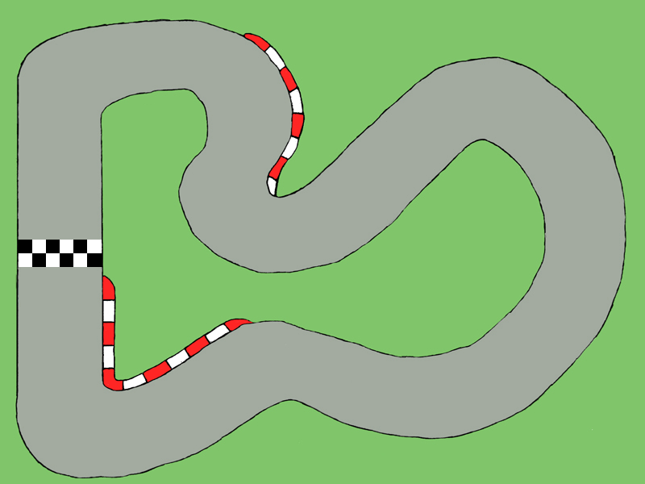
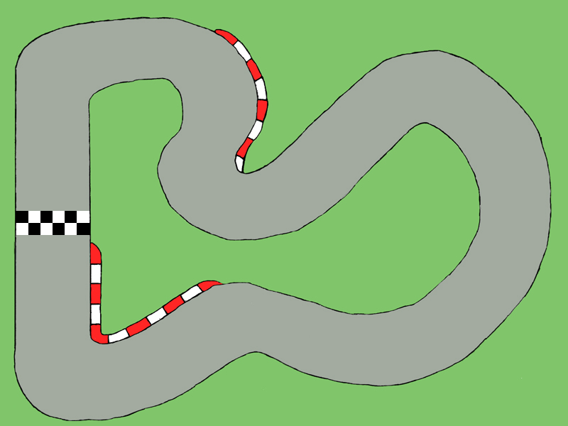

Contents:
Introduction:
In many games, there are instances where you will want a sprite, or an object to wrap around the edge of the screen, so that it appears on the otherside. Although it may seem complicated to do, it is actually very simple to do.
Here I am going to demonstrate the simplest version of the code, which just moves the object to the other side of the screen once it crosses the edge of the screen. Then I will expand on that code so that another image of the object is blitted on the otherside of the screen, meaning that there will be two of the object on the screen at once. This has the benifit of not having the object suddenly vanish from one side of the screen. Then Finally, I will implement the code that we have used to make a simple racing car simulator with a track.
For the third version of the program, I am going to be using an image of a car and a track, but this could potentially be anything.
 

These images can be downloaded here.
Screen Wrapping 1:
The source code for this program can be downloaded here: Screen Wrapping 1.py
Screen Wrapping 2:
The source code for this program can be downloaded here: Screen Wrapping 2.py
Car Game:
The source code for this program can be downloaded here: Screen Wrapping 3.py